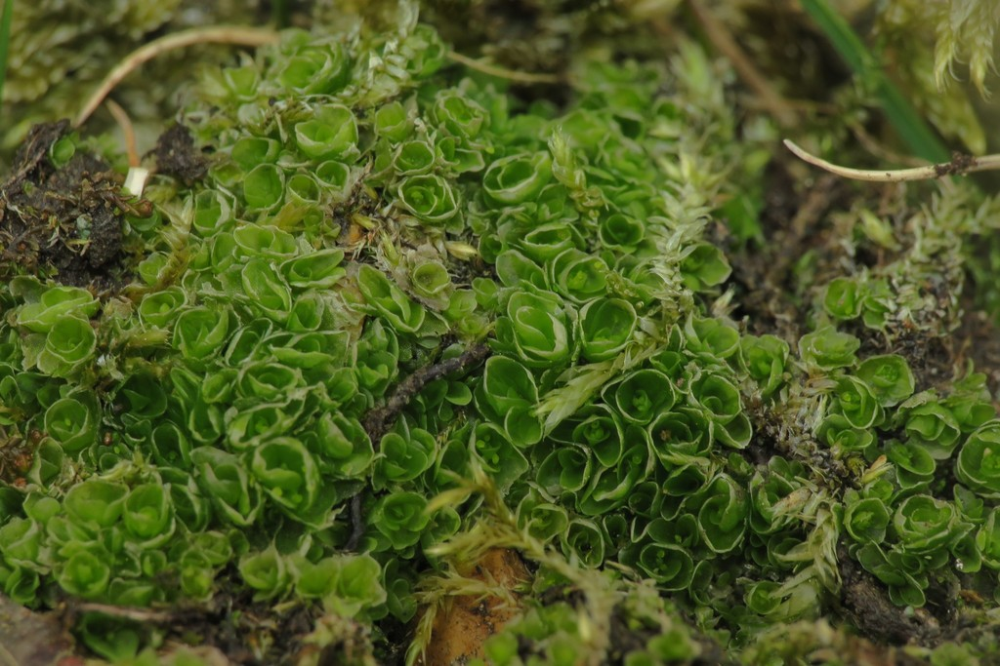

Oedipodiaceae
Oedipodium Moss Family
Oedipodiaceae is a highly distinctive, monotypic moss family containing only one species, Oedipodium griffithianum. It is an acrocarpous moss characterized by a basal rosette of somewhat fleshy, strap-shaped leaves and a unique sporophyte structure. Instead of a typical seta, the capsule is elevated on a thick, pale, fleshy stalk called an apophysis (or pseudopode) that develops from the gametophyte tissue. It grows in cool, humid, acidic environments, typically in rock crevices or on peaty soil ledges.
Overview
The Oedipodiaceae family, represented solely by Oedipodium griffithianum, occupies an isolated position within the mosses, placed in its own order, Oedipodiales. Its unique combination of features, particularly the sporophyte structure, sets it apart from all other moss families. The species has a markedly disjunct distribution across cool temperate and subpolar regions of both the Northern and Southern Hemispheres, suggesting it might be an ancient lineage.
The gametophyte consists of small, scattered or loosely tufted plants with a persistent basal rosette of relatively broad, fleshy, tongue-shaped leaves that arise from a thalloid protonema. The upper stem leaves are smaller and narrower. The most striking feature is the sporophyte: the capsule is borne not on a true seta (sporophyte tissue), but on a prominent, thick, pale green, fleshy stalk (apophysis) derived from the gametophyte's archegonial stalk. The capsule itself is erect, symmetric, and lacks a peristome.
Ecologically, Oedipodium is found in specific microhabitats – typically moist, shaded, acidic peat or humus accumulated in rock crevices, under overhangs, or on sheltered ledges, often at higher elevations or latitudes. Its unique morphology and isolated phylogenetic position make it of great interest in understanding moss evolution.
Quick Facts
- Scientific Name: Oedipodiaceae
- Common Name: Oedipodium Moss Family
- Number of Genera: 1 (Oedipodium)
- Number of Species: 1 (Oedipodium griffithianum)
- Distribution: Disjunct cool temperate/subpolar (Europe, Asia, N. America, S. America, subantarctic islands).
- Evolutionary Group: Bryophytes - Mosses - Oedipodiales
Key Characteristics (Moss Morphology)
Gametophyte: Growth Form and Habit
Plants are acrocarpous, small (stems typically < 1 cm tall), growing scattered or in loose, often yellowish-green tufts. A persistent, somewhat thalloid protonema gives rise to basal leaves forming a rosette.
Gametophyte: Stems
Stems are short, erect, simple, arising from the basal rosette. A central strand is present.
Gametophyte: Leaves
Leaves are dimorphic. Basal leaves are larger, forming a rosette, persistent, somewhat fleshy, broadly spatulate or lingulate (tongue-shaped) with rounded apices. Upper stem leaves are smaller, more erect, ovate to lanceolate. All leaves typically lack a costa or have a very faint one. Leaf cells are large, smooth, thin-walled, hexagonal to rectangular.
Sporophyte: Apophysis, Capsule, and Stomata
Sporophytes are highly distinctive. Sexual condition is autoicous or dioicous. A true seta is absent. The capsule is elevated on a prominent, thick, fleshy, pale green stalk-like structure called an apophysis (or pseudopode), which develops from the gametophyte tissue (archegonial stalk) and can be several millimeters long. The capsule is small, erect, symmetrical, ovoid to subglobose, often yellowish-green, becoming brownish with age. Unique among mosses, the capsule wall possesses well-developed stomata, similar to those of vascular plants, primarily on the apophysis and lower part of the capsule. The operculum is small, conical. A peristome is absent (gymnostomous). The calyptra (covering the capsule) is small, mitrate (conical), and smooth.
Field Identification (Mosses)
Identifying Oedipodiaceae requires recognizing its specific habitat, basal leaves, and especially its unique sporophyte:
Primary Identification Features (Field/Hand Lens)
- Habitat: Acidic, peaty soil in damp rock crevices or sheltered ledges, often montane or high-latitude.
- Basal Rosette: Look for the cluster of relatively broad, fleshy, tongue-shaped basal leaves.
- Unique Sporophyte Stalk (Apophysis): If fertile, the most diagnostic feature is the thick, pale, fleshy stalk elevating the capsule, clearly different from a typical wiry seta.
- Erect, Globose Capsule: Small, symmetric, often yellowish-green capsule lacking a peristome.
- Acrocarpous habit: Small, tufted plants with terminal sporophytes (when present).
Secondary Identification Features (Microscope often needed)
- Leaf Costa: Confirm absence or weakness of the costa.
- Cell Structure: Large, smooth, hexagonal/rectangular cells.
- Capsule Stomata: Presence of stomata on the capsule wall/apophysis (requires high magnification).
Common Confusion Points
- Small Liverworts: Some small thalloid or leafy liverworts might grow in similar habitats, but their structure and sporophytes (if present, often blackish capsules on translucent stalks, quickly collapsing) are very different.
- Other small acrocarpous mosses: Genera like Tetraphis or small Bryaceae might occur in similar habitats but lack the fleshy basal leaves and the unique sporophyte with its thick apophysis. They possess typical setae and usually peristomes.
- Protonemal stages of other mosses: While the protonema of Oedipodium is somewhat persistent and thalloid, it's the combination with the fleshy basal leaves and unique sporophyte that is key.
Field Guide Quick Reference (Mosses)
Look For:
- Habitat: Peaty soil in rock crevices
- Basal rosette of fleshy, strap-like leaves
- Acrocarpous tufts (small)
- Thick, pale, fleshy stalk (apophysis) below capsule (if fertile)
- Erect, symmetric, roundish capsule
- Absence of costa in leaves
Key Variations:
- Presence/absence of sporophytes (often fertile)
- Size of basal rosette
Notable Genera
This family contains only a single genus and species:

Oedipodium
Oedipodium Moss (Genus)
The sole genus, represented by O. griffithianum. Defined by its unique combination of fleshy basal leaves, acrocarpous habit, and especially the sporophyte elevated on a thick, fleshy apophysis derived from gametophyte tissue, rather than a true seta. Capsules lack a peristome but possess stomata.
Phylogeny and Classification
Oedipodiaceae stands alone in its own order, Oedipodiales, within the class Bryopsida. Its phylogenetic position is isolated and has long been enigmatic. It shares some features with early diverging moss lineages (like stomata on the capsule, found also in Funariidae and Bryidae) but also possesses unique characteristics (the apophysis). Molecular studies confirm its isolation, suggesting it represents a very early branch within the Bryopsida, possibly diverging before the major radiations of groups like Bryales or Hypnales.
The evolutionary significance of Oedipodiaceae lies in its unique suite of characters, particularly the sporophyte development. The replacement of the seta with a gametophyte-derived apophysis is unparalleled among mosses and offers insights into the potential plasticity of developmental pathways in early land plants. The presence of functional stomata on the capsule is also considered a potentially ancestral (plesiomorphic) trait within mosses.
Position in Plant Phylogeny
- Kingdom: Plantae
- Division: Bryophyta (Mosses)
- Class: Bryopsida
- Order: Oedipodiales
- Family: Oedipodiaceae
Evolutionary Significance
The Oedipodiaceae family is crucial for understanding moss evolution due to:
- Unique Sporophyte Development: The evolution of the fleshy apophysis instead of a seta provides a unique model for developmental biology and evolutionary pathways.
- Possession of Ancestral Traits?: Features like capsule stomata may represent plesiomorphic characters retained from early land plant ancestors.
- Isolated Phylogenetic Position: Represents a deep, independent branch in the moss tree of life, highlighting ancient diversification.
- Adaptation to Specific Niches: Demonstrates successful specialization for cool, humid, acidic microhabitats.